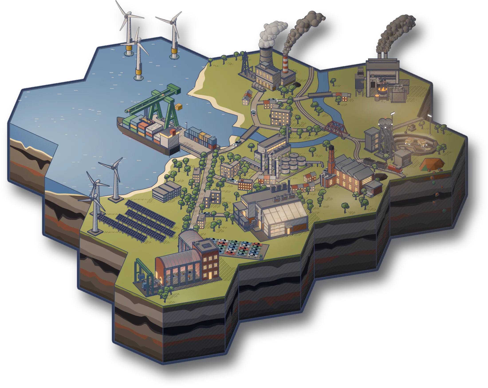
Carbon and Capital is a turn-based strategy game where you take over a company and expand into coal, steel, cars, solar panels, computers and everything in between.
Demo out on itch.io for Windows, Linux and MacOS
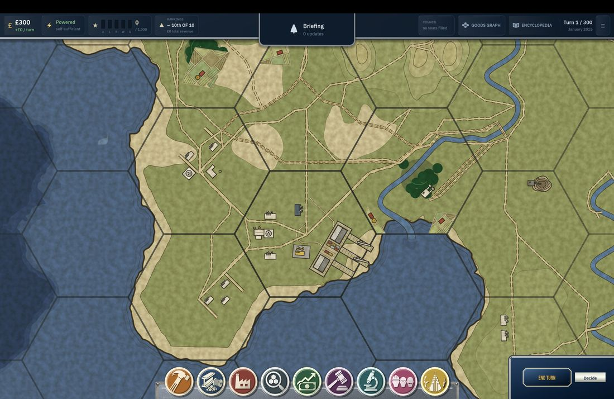
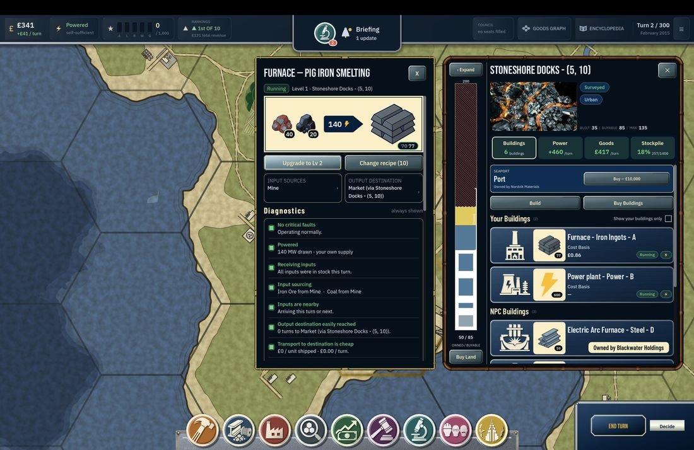
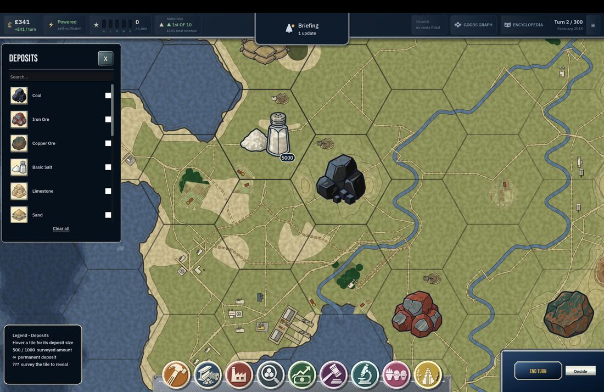
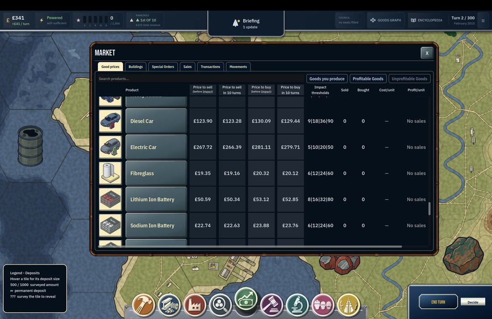
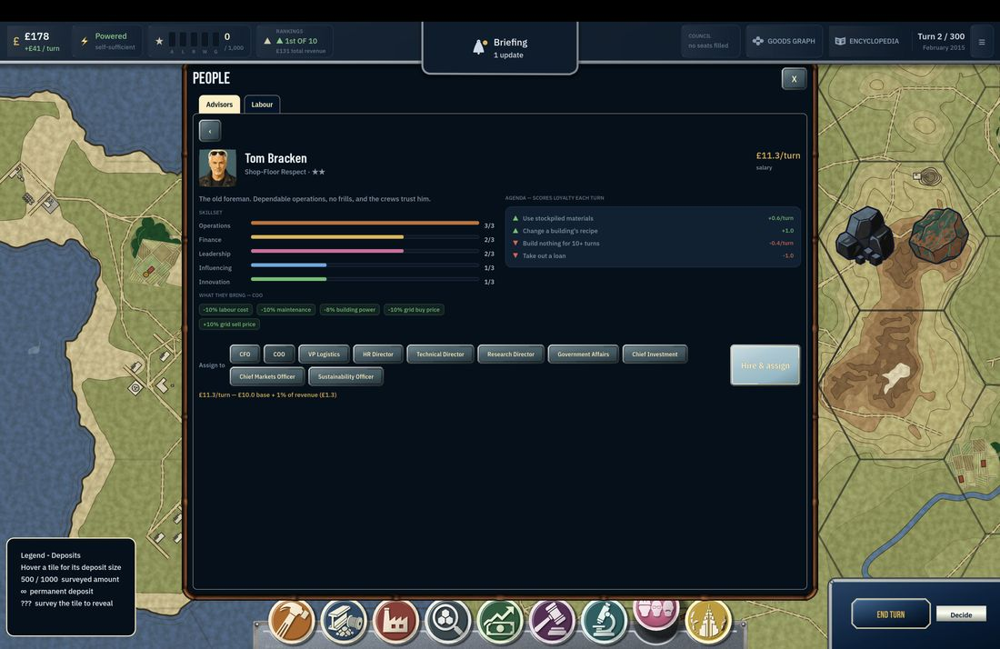
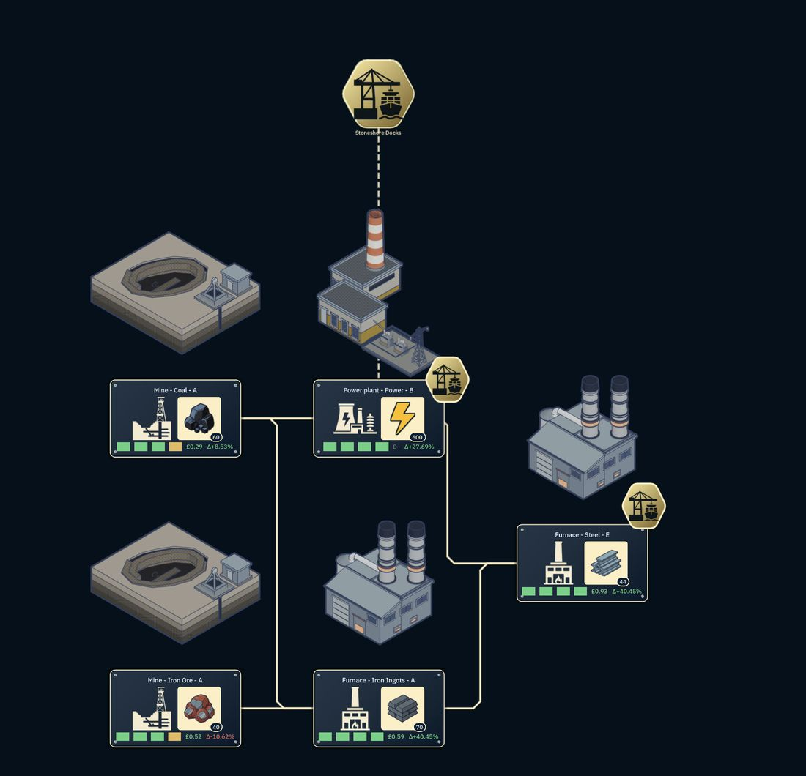
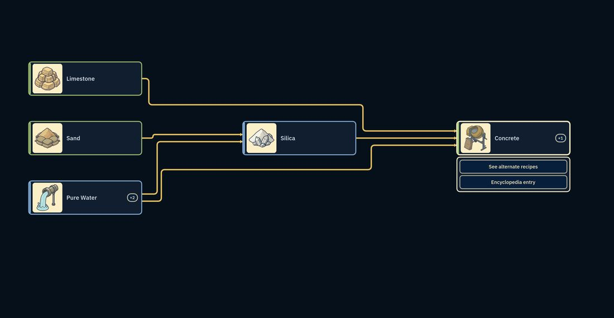
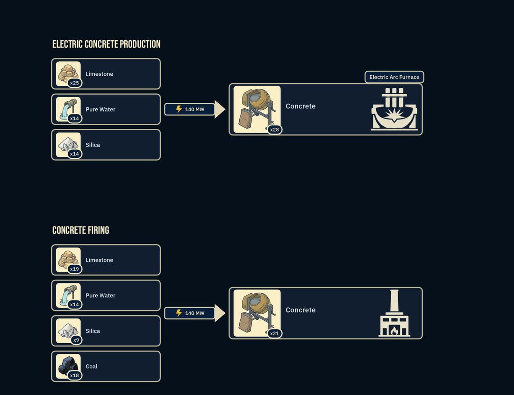
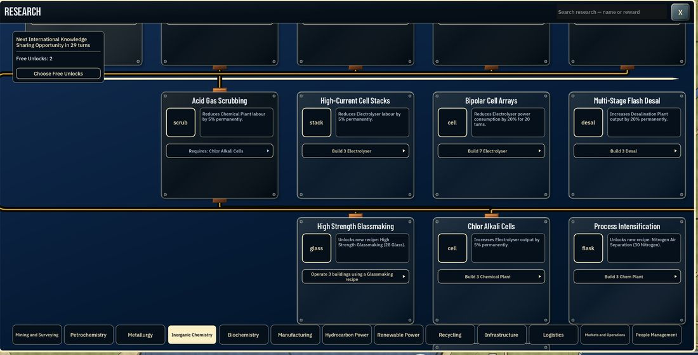
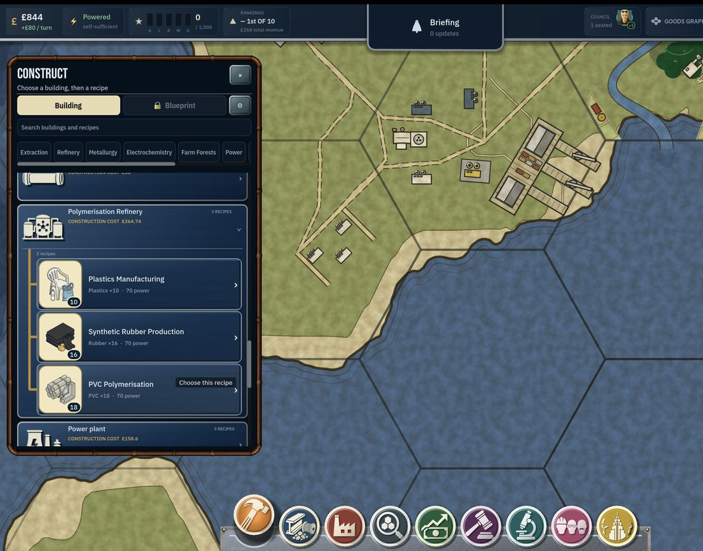
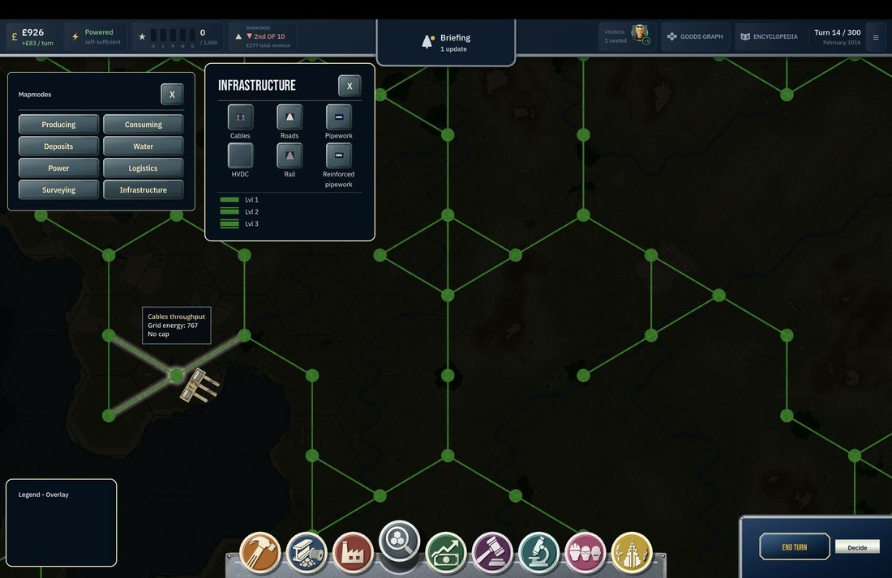